Ми тестували Hyundai ioniq 5. Та зараз, коли то і діло зникає електроенергія в мережі ми поглянули на нього інакше. В цього авто є унікальна функція. ioniq 5 може живити електрикою навіть ваш будинок, віддаючи до 3,6 кВт потужності. Зважаючи на эмнысть батареэ в 73 кВи*год запасу електрики вистачить быльше ныж на 20 годин.
Якого він розміру?
Спочатку, коли я побачив це авто, то важко було взагалі зрозуміти якого ioniq 5 розміру. Лише взявши до рук дані з’ясувалось що він таки чималий. За габаритами ioniq 5 десь між Tucson та Santa Fe. А от за розміром колісної бази він взуває обох. Фактично в нього колісна база як в Mercedes-Benz S-class!
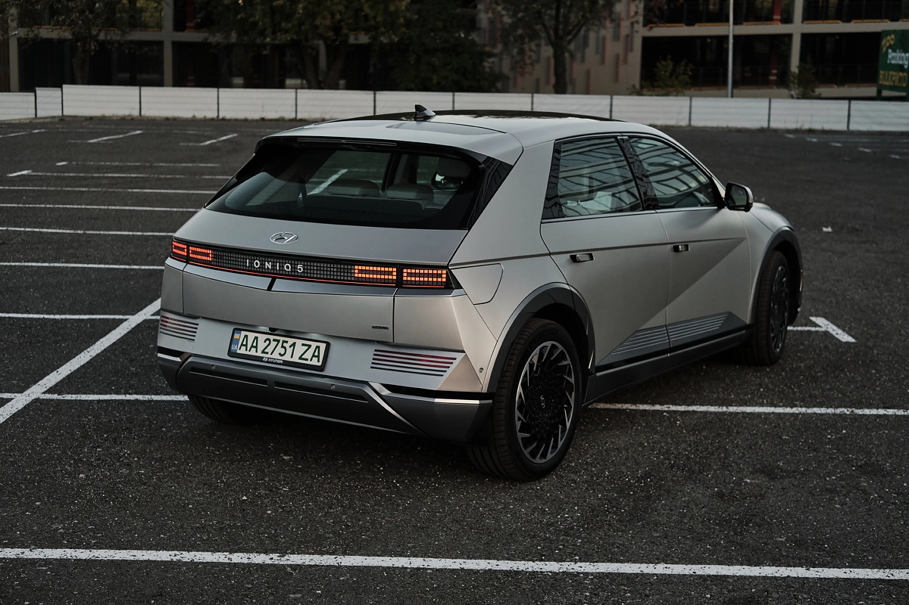До речі, якось не зразу очевидно що це не гігантських хетчбек з базою 3 метри, а кросовер. Саме так його позіціонують. Ми перевіримо його здатність нехай не борсатись в багнюці, а принаймні проїхати сільскою дорогою. Глянемо як машина з 16 см кліренсу, базою 3 метри та колесами 255/35 R20 виглядатимуть за межами асфальту. Цікаво що і самі колеса не прості. Це Michelin Pilot Sport EV, які одночасно розраховані на більше навантаження, враховуючи вагу ioniq 5 в 2 тони, та знижений коефіцієнт опору котіння. Та є нюанси. Якщо в Києві ще якось можна пересуватися на таких великих колесах з низьким профілем, то поза містом починаєш відразу напружуватись і вишукувати кожну яму і придивлятися до великих стиків дорожнього покриття, або, не приведи Боже, ремонту дороги зі зрізаними кромками асфальту.
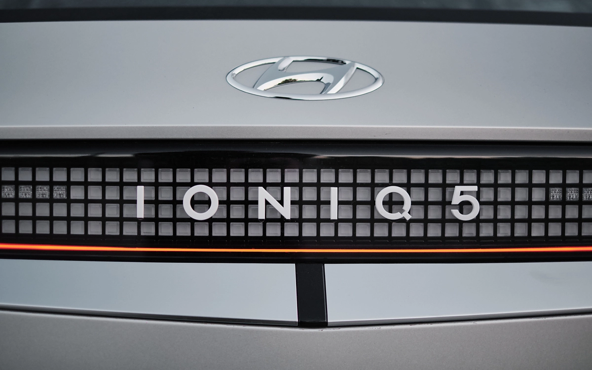Дизайн – сенсація!
Наш Іонік це по своєму унікальне явище. Таких машин за всю історію було зовсім не багато. Мова про те, що ioniq 5 це практично серійна версія концепту 45 EV, зразка 2019 року. Враження надзвичайні. Спочатку авто навіть трохи шокує. В ньому купа незвичного.
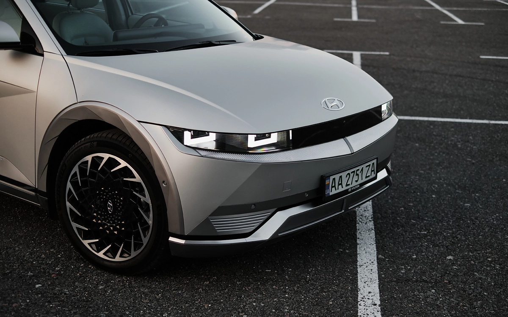Прямокутні ходові вогні фар, матричні задні ліхтарі, багато різких та виразних ліній. Щоправда їх якось навіть занадто багато. А чого вартий салон! Від вмикання передач підкермовим перемикачем, наче світло в японських та корейських авто. Крутиш вершечок важеля та й годі. Зручно, та при швидкому маневруванні треба бути уважним, щоб крутнути в потрібний бік. Мерседесівський підкермовий перемикач в цьому сенсі зручніший. І до системи відео моніторингу сліпих зон теж треба звикнути. Коли вмикаєш поворот на панелі виводиться картинка ділянки, яку не захоплюють дзеркала заднього огляду. Дико відволікає спочатку. Та з часом виявляється, що це до біса зручно. Просто не треба спеціально витріщатись, а достатньо краєм ока подивлятись чи не заліз часом там якийсь швидкий велосипедист чи самокатник. А вони таке полюбляють.
Шезлонги для пасажирів
В салоні ще купа різних незвичних рішень, що до компоновки. Але головна – розмір салону, та повністю пласка підлога. Взагалі салон не сприймається як щось справжнє, бо і компоновка і кольори і матеріали якісь дивні. Як на мене, то відтінків сірого в інтер’єрі аж забагато, проте тут є пояснення. Справа в тому, що обираючи гаму салону вибір робили в бік максимально натуральних кольорів. А крім того, частина панелей зроблена з вторинно перероблених пластиків, зокрема пластикових пляшок.
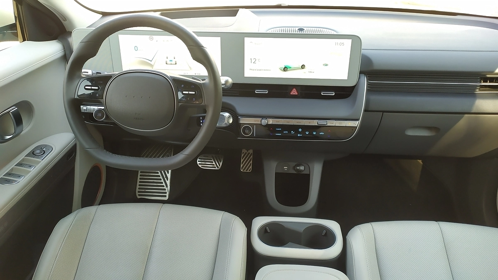 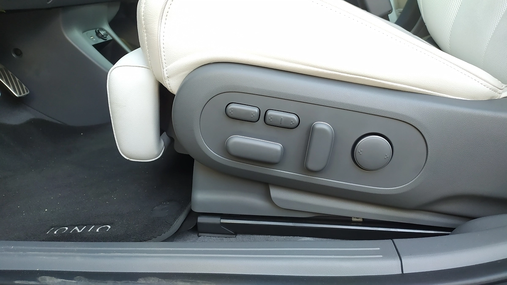В салоні є така фішка, як розкладання сидінь у положення шезлонгу. Водійське крісло активує цю функцію лише коли авто стоїть, з міркувань безпеки. Хоча машина і має рівень автономності руху L2, та може самостійно тримати дистанцію до передньої машини, триматись в смузі руху та повністю запинятись в трафіку. Правда щоб зрушити з місця авто все ж просить натиснути кнопку на кермі або педаль акселератора. Дуже розслабляє в трафіку. Я навіть дивився відео на телефоні не переймаючись корками на дорозі.
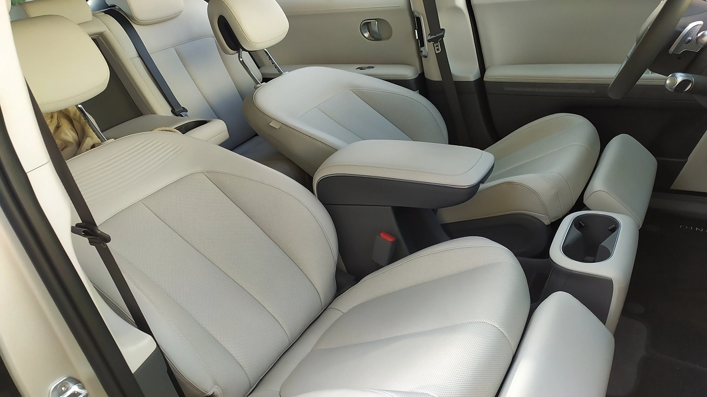Але повернемось до крісел. Таку штукенцію з розкладанням буде класно використовувати в дальніх поїздках, коли автомобіль ставиться на зарядку. Поки машина поповнює заряд батарею то і водій може трохи перезарядитись, полежавши на зручному кріслі.
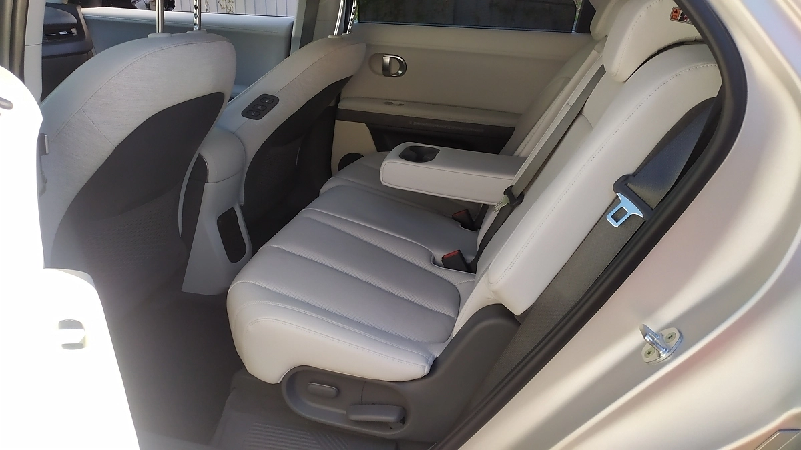Які бувають варіанти ioniq 5
В гамі ioniq 5, що пропонується в Україні, чотири версії. Вони діляться за типом приводу та розміром батареї. Базова має задній привід, один двигун на 170 к.с. та 350 Нм. Батарея в нього на 58 кВт*год. Він найдешевший. Повнопривідна машина з такою ж батареєю має вже два двигуни, сумарна потужність їх складає 233 к.с. а крутний момент аж 605 Нм. З великою батареєю на 73 кВт*год машина може мати задній привід з двигуном 217 к.с. та 350 Нм. А топова модифікація, як в нас на тесті, оснащується двома двигунами на 305 к.с. та 605 Нм.
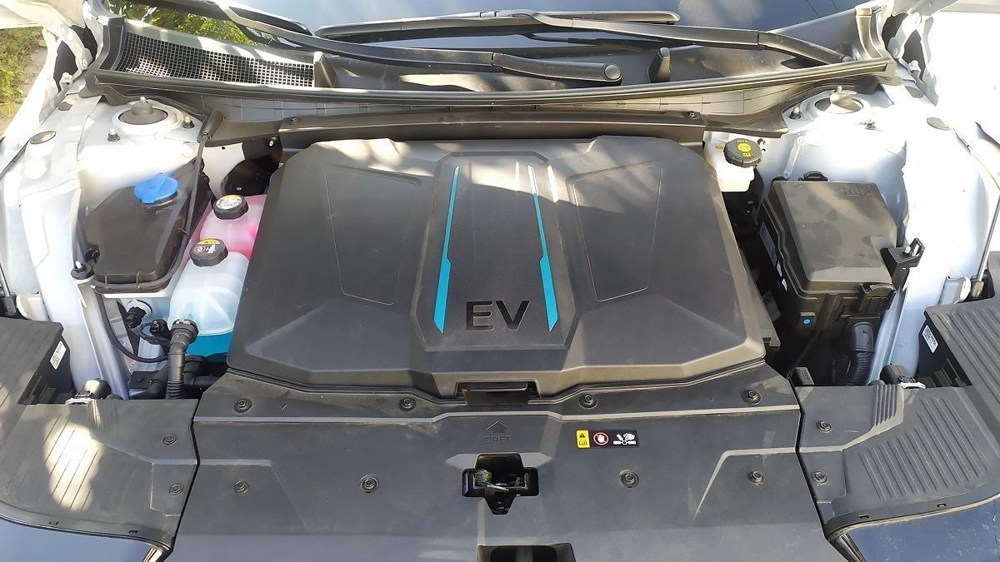 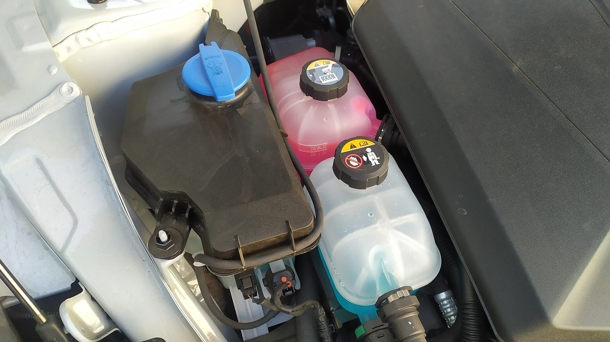В підлозі нашого ioniq 5 схована ефективна батарея на 73 кВт*год. Круто що вона має власну систему охолодження. Система регулює охолодження радіатора за допомогою активних лопатей, які вбудовані у бампер. Вони відчиняються коли потрібно охолодження. Батарея також має систему підігріву, щоб узимку акумулятори не переохолоджувались та не втрачали ємність. Цікаво що під капотом ioniq 5 відразу два розширювальних бачки. Один для рідини системи охолодження батареї. А для чого ж інший? Він використовується системою Hit Pump. Вона використовує температуру від роботи батареї для обігріву салону, тим самим не витрачає заряд на підігрів повітря для «пічки».
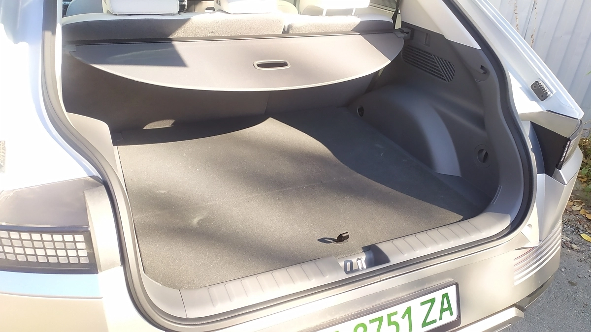Сама батарея має прогресивну архітектуру, що дозволяє їй працювати з мережею 800 В. За рахунок цього ioniq 5 має колосальну швидкість зарядки постійним струмом. Він здатен хапати заряд потужністю до 350 кВт. Нехай таких станцій в Києві поки аж одна, та все одно це дуже круто. На ній від 10 до 80 відсотків зарядка займає всього 18 хвилин. Але й на 50-кіловатних швидких станціях машина бере заряд достатньо швидко. За годину можна відновити заряд від 20 до 80%. Цього досить щоб проїхати близько 230-250 км. Якщо заряджати машину від домашньої мережі, то звичайно краще скористатись трифазною зарядкою потужністю на 11 кВт. Саме стільки може «переварити» вбудований інвертор, що перетворює змінний струм мережі на постійний струм, необхідний батареї авто. Крім того звичайною зарядкою від розетки 73-кіловатну батарею можна заряджати не одну добу. А от 11-кіловатною цілком можна повністю зарядити авто за ніч.
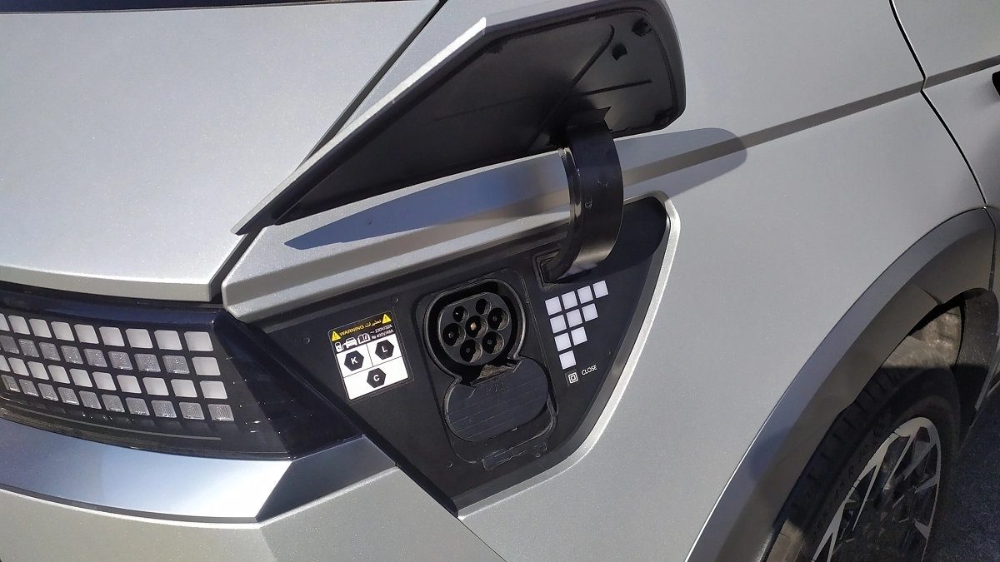Важливе, якщо не головне, питання усіх хто звертає увагу на електрички це скільки машина може проїхати на одному заряді. Обіцяний запас ходу в змішаному циклі в ioniq 5 з батареєю 73 кВт складає 430 км. Враховуючи, що ми рухаємось по Києву та за містом і за два дні тесту вийшли на показник від 17 до трохи нижче заявлених заводом 19 кВт/100 км, то маємо цілком реалістичні дані. Проте є й інша величина, якої досягти практично не реально. Показник в 597 км пробугу в місті! Відразу мушу засмутити. Для таких показників требі їздити за європейскими правилами, без заторів та не перевищувати швидкість в 50 км/год. В Києві про таке годі й мріяти. То ж 430 км «наше все».
Та сама унікальна фішка батареї ioniq 5!
Але при створенні ioniq 5 корейцям спала на думку до біса логічна штука. Чому б батарею електромобіля не використовувати не тільки на зарядку, але і на розрядку через роз’єм Type 2? І, вуаля, маємо функцію V2L. За допомогою спеціального перехідника, що лежить в багажнику авто, роз’єм Type 2 перетворюється на звичайну розетка на 250 В та 16 А. Так що в вашому розпорядженні 3,6 кВт потужності. Цього цілком достатньо, щоб забезпечити освітлення приватного будинку з LED лампами, підтримати роботу холодильника або навіть насоса у свердловині. Місткості батареї в 73 кВт * год вистачить на те, щоб підтримувати таку автономність житла до 20 годин. Але щоб не розрядити свій автомобіль у нуль, можна в меню встановити поріг того, скільки електрики ви готові віддати зі свого Іоніка.
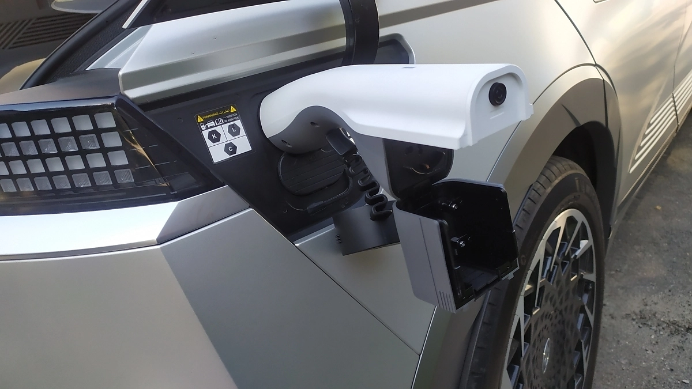Хоча інструкція з цього приводу нічого і не пише, проте, за логікою ioniq 5 може заряджати і інші електромобілі! То ж ця машина – ще й справжній рятівник розряджених в нуль побратимів. Браво корейцям. Класна ідея.
Як веде себе на дорозу ioniq 5 вагою в 2 тони?
Низький центр ваги, широка колія, великі колеса – все це про стійкість авто. І хоча образ ioniq 5 надто авангардний, щоб його можна було віднести до спортивних кросоверів, проте він міцно стоїть в віражах. Що вже казати про трасу, до 3-метрова база робить ioniq 5 стабільним як локомотив.
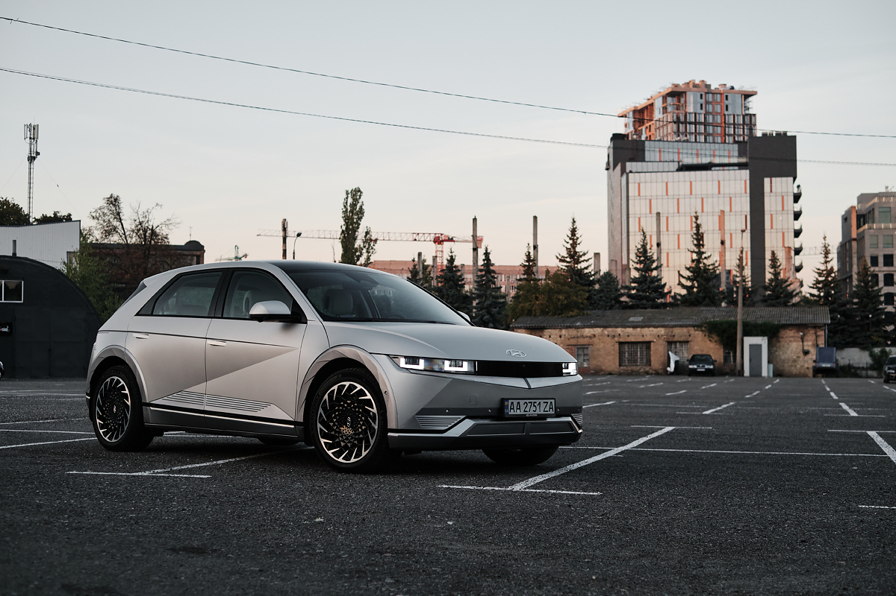Що до налаштувань підвіски, то вона опинилась значно комфортнішою ніж я очікував від машини з низькопрофільними колесами 255/45 R20. Ой скільки разів серце холонуло, коли ми проїжджали нерівності. Але ні, машина без дискомфорту відпрацьовує все. Навіть бруківка не надто трясе. Проте на ній кузов починає видавати низькочастотний гул, наче від резонансу. Задоволення дуже сумнівне. Зразу хочеться зупинитись.
На трасі я по справжньому оцінив різні режими налаштування ioniq 5. Кнопкою на кермі можна швидко перемкнутись від спокійного та відносно повільного режиму Eco, до Normal або навіть спорт. Я зазвичай користувався першим і останнім. В місті Економний режим дозволяє рухатись плавніше, та й запас ходу так більший. А ось на трасі, при випередженнях саме доречний спортивний режим. ioniq 5 в спортивному режимі буквально змінюється. Із великого техно-інтелегента він перетворюється на космічний корабель. 605 Нм та повний привід дають не просто поштовх, а створюють реальний удар, коли кладеш педаль в підлогу. Будь кого на трасі обганяєш легко, швидко. Це кайф. Таким машина просто закохує в себе. І розкажіть після прискорення 0-100 км/год за 5,2 с про неемоційність електромобіля.
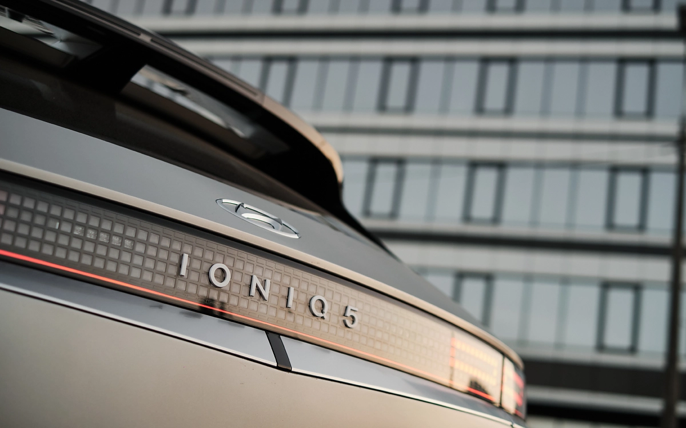Ефективно працює система рекуперації. Вона в повсякденному житті практично повністю заміняє звичайні гальма. За допомогою підкермових перемикачів можна активувати кілька різних режимів рекуперації, від дуже слабкого до максимального. Або навіть режиму електронної педалі, коли прискорення та вповільнення до повної зупинки керується однією педаллю акселератора. До речі в ioniq 5 дизайнери класно обіграли тему педалей. На акселераторі знак «+» а на гальмах «-».
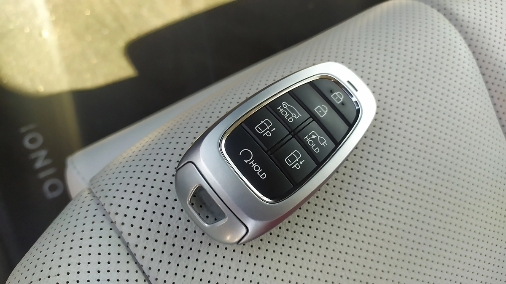Цікаво що в повсякденному житті машина може для сповільнення використовувати виключно системи рекуперації. В інструкції авто є навіть спеціальний пункт, де описується ситуація, коли ви чуєте від автомобіля якісь сторонній звук при гальмуванні. Швидше за все це просто заіржавіли на гальмівних дисках. Для того, або побороти таку ситуацію рекомендовано просто вимкнути система рекуперації і який час поглиблювати за старою за звичкою, за допомогою звичайних гальм.
Аватар на парковці та авто, що їде без водія
В ioniq 5 сподобалось багато цікавих фішок з точки зору візуалізації. Особливо система індикації заїзду на парковку. Використовуючи камеру 360°, які встановлені в кузові автомобіля, машина створює так званий 3D аватар ioniq 5, який показує в реальному оточенні де ви паркуєтесь. Але ось що парадоксально. Попри надзвичайно пристойний рівень оснащення системи допомоги паркування, коли авто саме оцінює розмір місця, та автоматично кермує та зупиняється при заїзді в паркомісце, в Україні не пропонується. Проте є інша система. На ключі ioniq 5 є кнопки, за допомогою яких можна активувати дистанційне керування автомобілем. Натискаєш кнопку замикання, потім кнопку пуску двигуна а потім тримаєш відповідно кнопку з напрямом руху. Треба стояти досить близько до авто, щоб машина вас слухалась. Розумний ioniq 5 сам вирівняє колеса, якщо ви залишили курмо вивернутим і тільки потім почне рух. До того ж датчики не дають машині в’їхати в перешкоду, яка зустрінеться на шляху. В тому числі ioniq 5 не наїде на вас, якщо стоїте за або перед авто.
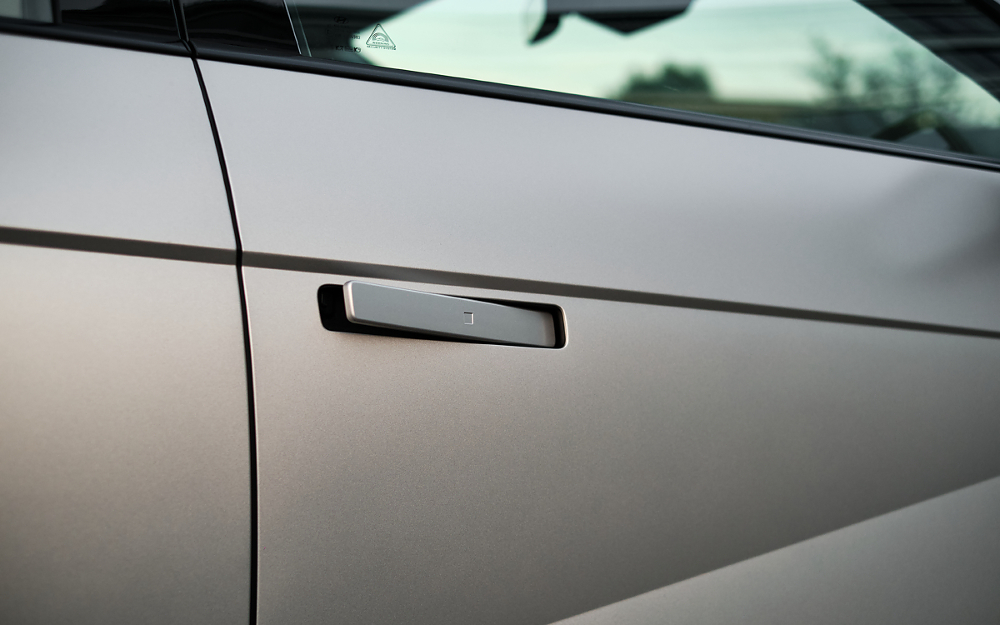Що в підсумку за авто ioniq 5?
Після кількох днів, що ми провели в компанїї ioniq 5 я так і не зміг прийти до внутрішньої згоди що до авто. Як електромобіль ioniq 5 дуже крутий. Це вже не зовсім Hyundai, а швидше представник окремого суббренду з окремою філософією. Та й по дизайну видно що із рештоє класу ioniq 5 схожий... аж ні трохи. Тут класна батарея на 800 В, швидка зарядка та розумні рішення. Ionoq 5 за свою ціну топ, а конкуренти, лише стартують з цієї позначки. Проте, факт залишаєть фактом. Хоча, якщо ви хочете щоб за вашим авто люди проводили поглядом, то тут ioniq 5 мабуть дасть фору всім преміальним маркам. Принаймні на якийсь час.